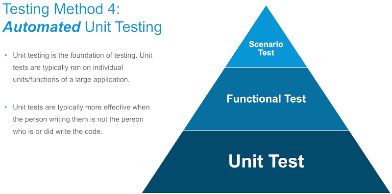

Unit Testing and the UsesInstanceGeometry Method
Quick notes on two recent interesting Revit API discussion forum threads:
Unit Testing
We discussed unit testing here a number of times in the past, cf., the topic group on unit testing.
The Revit API discussion forum thread on unit test for Revit add-in brought it up once again.
In his answer, Kade Major points out the Autodesk University class by Patrick Fernbach and Corey Smith from last November explaining how to automate your Revit add-in testing with unit testing.
Its unit testing is based on the RevitTestFramework that evolved out of the Dynamo Revit unit test framework an many subsequent improvements.
Here are the handout and slides:
Please refer to the Autodesk University class material for the full video recording.

Many thanks to Corey, Kade and Patrick for their work and bringing this to my attention!
UsesInstanceGeometry IFC Utility Method
Once again, a useful piece of Revit API utility class functionality that I was previously unaware of popped up in a Revit API discussion forum thread, on FamilyInstance.UsesInstanceGeometry deprecated but not documented.
The question prompted me to take a look at the UsesInstanceGeometry method on the Autodesk.Revit.DB.IFC.ExporterIFCUtils utility class:
Identifies whether the family instance has its own geometry or uses the symbol's geometry with a transform.
That seems like very useful thing to be aware of.
As Rudi the Revitalizer keeps pointing out, the Revit API util classes are often overlooked.
I am always amazed at the number of unexpected gems hidden in there.